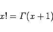
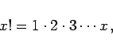
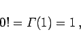
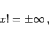
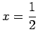
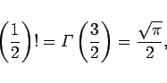
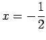
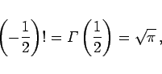
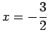
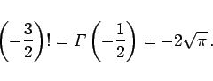

Inhalt Index DeskTop Bronstein

 Integralrechnung Bestimmte Integrale Integration durch Reihenentwicklung, spezielle nichtelementare Funktionen Gammafunktion
Integralrechnung Bestimmte Integrale Integration durch Reihenentwicklung, spezielle nichtelementare Funktionen Gammafunktion


Der zunächst nur für ganzzahlige positive n definierte Begriff der Fakultät erfährt über die Funktion
|  | (8.103a) |
seine Erweiterung auf beliebige reelle Zahlen. Es gelten die folgenden Beziehungen:
Für ganzzahliges positives x
|  | (8.103b) |
für x = 0
|  | (8.103c) |
für ganzzahliges negatives x
|  | (8.103d) |
für 
|  | (8.103e) |
für 
|  | (8.103f) |
für 
|  | (8.103g) |
Eine näherungsweise Berechnung der Fakultät für beliebig große Zahlen (>10), auch gebrochene Zahlen  , kann mit Hilfe der STIRLINGschen Formel erfolgen:
, kann mit Hilfe der STIRLINGschen Formel erfolgen: